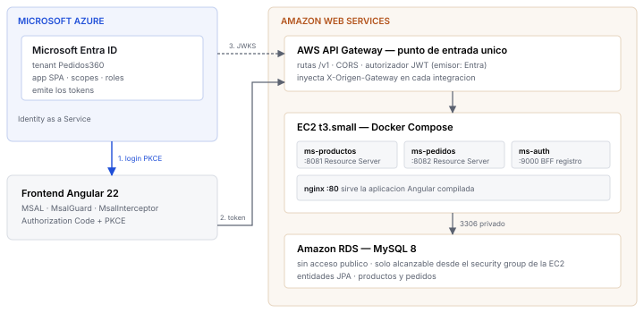

Pedidos360 es una tienda digital construida como sistema multi-nube: la identidad la administra Microsoft Entra ID en Azure y el computo vive en AWS, tras un API Gateway que actua como unico punto de entrada y valida cada token antes de dejarlo pasar.
Las dos nubes no comparten red ni credenciales. El unico puente entre ellas es el JWKS: una URL publica desde la que AWS descarga las llaves con que verificar las firmas que emite Azure. No hay VPN, ni base de datos compartida, ni relacion de confianza configurada entre proveedores; solo criptografia de llave publica.
Estado verificado. 20 de 20 comprobaciones de humo contra el despliegue, 10 pruebas unitarias en el backend, y 9 de 9 comprobaciones del flujo de inicio de sesion, incluida la que demuestra PKCE. Las evidencias del capitulo 9 se generan con scripts del propio repositorio, de modo que cualquiera puede rehacerlas.

El recorrido de una peticion cualquiera:
| Componente | Puerto | Responsabilidad |
|---|---|---|
front-angular | 80 | Aplicacion de pagina unica en Angular 22 con MSAL |
ms-productos | 8081 | Catalogo. Resource Server OAuth 2.0 |
ms-pedidos | 8082 | Pedidos. Resource Server con autorizacion por rol y scope |
ms-auth | 9000 | BFF: registra usuarios en el tenant mediante Microsoft Graph |
| Amazon RDS | 3306 | MySQL 8, sin acceso desde Internet |
ms-productos y ms-pedidos no autentican a nadie: reciben un token y
verifican firma, emisor, audiencia y vigencia. La lista de emisores confiables es configuracion y
no codigo, de modo que el validador se elige segun el claim iss del token entrante.
Esa decision se pago sola: migrar del Identity Provider propio a Entra ID consistio en cambiar dos variables de entorno, sin tocar una sola linea de Java. Si la validacion hubiera estado cableada a un emisor fijo, habria habido que reescribir los tres servicios.
El controlador de pedidos distingue los dos ejes de permiso. El scope dice que puede hacer la aplicacion; el rol dice quien es la persona:
@PreAuthorize("hasAuthority('SCOPE_pedidos.escribir') or hasRole('ADMIN')")
public ResponseEntity<?> crear(@RequestBody NuevoPedidoDTO peticion,
@AuthenticationPrincipal Jwt jwt) { ... }
El pedido se asocia al claim sub del token y nunca a un campo que envie el cliente,
de modo que nadie puede crear ni consultar pedidos a nombre de otro.
Al crear un pedido, ms-pedidos valida la existencia del producto llamando por HTTP a
ms-productos y reenviando el token del usuario. La identidad viaja entre
servicios en lugar de confiar ciegamente en el llamador interno, asi que el servicio de catalogo
sigue aplicando sus propias reglas aunque la peticion venga de otro microservicio.
El enunciado establece que el microservicio de identidad lo administra el tenant de Azure, asi que no hay que programarlo. Pero la evaluacion pide ademas que los usuarios puedan crear su cuenta desde el frontend, y un tenant de Entra ID gratuito no ofrece autoservicio de registro.
La solucion fue convertir ms-auth en un Backend For Frontend: recibe el
formulario y crea el usuario en el tenant a traves de Microsoft Graph, usando el flujo
client_credentials con permisos de aplicacion y consentimiento de administrador. El
navegador no podria hacerlo por si mismo, porque tendria que exponer un secreto de cliente y el
JavaScript de una aplicacion de pagina unica es publico.
| Dato | Valor |
|---|---|
| Tenant | Pedidos360 — pedidos360ismaoyarzun.onmicrosoft.com |
| Emisor | https://login.microsoftonline.com/<tenant>/v2.0 |
| Aplicacion | Pedidos360 SPA, tipo de cuenta: solo este directorio |
| Scopes | productos.leer, pedidos.escribir |
| Roles | ADMIN, USER |
| Version del token | 2 |
Es la decision mas facil de equivocar y la que no da ningun error evidente. Registrando las URI de
redireccion como Web, Azure asume que existe un backend capaz de guardar un secreto y exige
client_secret al canjear el codigo. Registrandolas como SPA, Azure habilita
Authorization Code con PKCE, que es lo que corresponde a un cliente publico.
Por defecto Entra emite tokens v1, con emisor sts.windows.net, un formato heredado.
Con requestedAccessTokenVersion: 2 el emisor pasa a
login.microsoftonline.com/<tenant>/v2.0, que es el que espera MSAL, el que publica
descubrimiento OIDC estandar y el que el autorizador de AWS puede consultar.
"iss": "https://login.microsoftonline.com/5cb85dc6-.../v2.0" "aud": "c483f102-da2d-41b5-b48e-26e7ca78ab98" "sub": "a_2SyIjVm22xKmjUXc-Hiz7_MhB_ZMNet3Fukec7GU8" "scp": "pedidos.escribir productos.leer" "roles": ["USER", "ADMIN"] "ver": "2.0"
Entra usa scp para los scopes, mientras otros proveedores usan
scope. El convertidor de autoridades lee ambos, y por eso el mismo codigo sirvio para
tres emisores distintos durante el desarrollo.
La ruta publica no es la misma que expone el microservicio. El gateway traduce:
| Ruta publica | Destino interno | Autorizador |
|---|---|---|
GET /v1/productos | :8081/api/v1/productos | Entra ID |
GET /v1/productos/{id} | :8081/api/v1/productos/{id} | Entra ID |
GET /v1/productos/quien-soy | :8081/api/v1/productos/quien-soy | Entra ID |
GET /v1/pedidos | :8082/api/v1/pedidos | Entra ID |
POST /v1/pedidos | :8082/api/v1/pedidos | Entra ID |
GET /v1/pedidos/todos | :8082/api/v1/pedidos/todos | Entra ID |
GET /v1/public | :8081/api/v1/public | abierta |
POST /auth/registro | :9000/auth/registro | abierta |
GET / y GET /{proxy+} | :80 (nginx) | abierta |
Separar ambas cosas es lo que aporta un API Manager: la version vive en la ruta publica, de modo
que publicar una v2 es apuntar GET /v2/productos a otra integracion sin que
los clientes de v1 se enteren ni los microservicios tengan que coordinar sus rutas
internas.
Al elegir la ruta, API Gateway prefiere los segmentos literales sobre las variables:
/v1/productos/quien-soy gana sobre /v1/productos/{id}, asi que
"quien-soy" no se interpreta como un identificador.
Configurado en el API Manager con origenes explicitos y no con comodin, y solo con los metodos y
cabeceras que la aplicacion necesita. El preflight desde el dominio del frontend responde con la
cabecera access-control-allow-origin; desde cualquier otro origen responde sin ella, con
lo que el navegador bloquea la llamada.
Un autorizador de tipo JWT apuntado al emisor de Entra ID. AWS descarga por su cuenta el JWKS que anuncia el descubrimiento de Azure y verifica firma, vigencia, emisor y audiencia antes de reenviar la peticion. Lo que no cuadra se rechaza en el borde y nunca llega a la instancia.
Un autorizador JWT admite un unico emisor. Por eso la capacidad de validar varios emisores vive en los microservicios y no en el gateway.
El enunciado exige que el API Gateway sea el unico punto de entrada. La instancia EC2, sin embargo, tiene IP publica y expone los puertos de cada servicio, de modo que una llamada directa podria saltarse el gateway y su autorizador por completo.
El gateway inyecta la cabecera X-Origen-Gateway en cada integracion, y un filtro
rechaza con 403 toda peticion que llegue sin ella. Ese filtro se registra con la precedencia mas
alta, antes que la cadena de Spring Security, para que el trafico ajeno ni siquiera llegue a la
validacion del token.
Lo que esta medida no es. No es aislamiento de red y no conviene defenderla como tal: quien conozca el secreto puede seguir llamando directamente, y el secreto viaja en claro entre el gateway y la instancia porque la integracion es HTTP. La arquitectura correcta seria una subred privada con VPC Link, que exige un balanceador y cuesta del orden de USD 16 mensuales, fuera del presupuesto de la cuenta academica. Lo que se consigue es que el gateway sea el unico camino funcional y que las reglas del borde no se puedan eludir.
El catalogo y los pedidos viven en Amazon RDS MySQL 8, integrado mediante entidades JPA,
repositorios de Spring Data y propiedades de conexion por variables de entorno. El mismo artefacto
apunta al contenedor local en desarrollo y al endpoint del RDS en AWS; solo cambia
DB_HOST.
La instancia no tiene IP publica. La unica regla de entrada abre el puerto 3306 hacia el security group de la EC2, no hacia un rango de direcciones. Esa distincion importa: la IP publica de la instancia cambia cada vez que se reinicia el laboratorio, y una regla por direccion habria que corregirla en cada arranque.
productos pedidos
id bigint PK id bigint PK
nombre varchar(120) cantidad int
precio int cliente varchar(200) indexado
creado datetime(6)
producto_id bigint
pedidos.cliente guarda el claim sub del token. No hay clave foranea
hacia productos: son microservicios distintos y cada uno es dueño de sus datos; una
clave foranea los acoplaria a compartir esquema. La existencia del producto se valida por HTTP,
como se describe en 3.3.
Los microservicios usan un usuario con permisos unicamente sobre su esquema, nunca el usuario maestro de la instancia. Si alguno se viera comprometido, el atacante no podria crear usuarios ni tocar otras bases.
Cada peticion se autoriza dos veces, en el borde y dentro del servicio. La duplicacion es deliberada: el gateway protege el perimetro, no el servidor.
| Situacion | Codigo | Quien responde |
|---|---|---|
| Token valido y permisos suficientes | 200 | el microservicio |
| Sin token, o token invalido o expirado | 401 | autorizador del API Gateway |
| Token valido pero sin el rol o el scope | 403 | Spring Security |
| Peticion que no viene del gateway | 403 | filtro de origen |
La distincion entre 401 y 403 no es cosmetica: el primero significa no se quien eres y el
segundo se quien eres y no puedes. GET /v1/pedidos/todos existe para demostrarlo:
exige el rol ADMIN, de modo que el usuario cliente recibe 403 con un token
perfectamente valido.
Los Resource Server aceptan una lista de emisores y eligen el validador segun el claim
iss, normalizando los permisos de cada proveedor a un mismo vocabulario. Durante el
desarrollo eso permitio tener funcionando un Identity Provider propio, Amazon Cognito y Entra ID a la
vez, y migrar entre ellos sin recompilar.
Se construyo un IdP OIDC completo, con firma RS256 y su propio JWKS, para entender el protocolo y para levantar y probar toda la cadena antes de que existiera el tenant de Azure. Una vez que Entra ID paso a ser el proveedor del sistema, ese IdP se retiro y despues se elimino.
El motivo no fue de limpieza sino de seguridad: sus credenciales de prueba estaban escritas en el codigo de un repositorio publico y su endpoint de login estaba expuesto sin autorizador. Mantenerlo habria dejado un camino de acceso paralelo y mas debil que el que exige la solucion. El historial de git lo conserva completo.
Ningun servicio del frontend toca la cabecera Authorization. El
protectedResourceMap declara que scope corresponde a cada URL y el
MsalInterceptor obtiene el token, lo renueva si expiro y lo adjunta:
mapa.set(`${api}/v1/productos`, [SCOPES.productosLeer]);
mapa.set(`${api}/v1/productos/*`, [SCOPES.productosLeer]);
mapa.set(`${api}/v1/pedidos`, [SCOPES.pedidosEscribir]);
mapa.set(`${api}/v1/pedidos/*`, [SCOPES.pedidosEscribir]);
La coincidencia es exacta y no por prefijo. Las entradas con comodin se declaran por
recurso y no como /v1/*, porque /v1/public debe seguir viajando sin token.
Generadas por scripts del repositorio y no a mano, de modo que se pueden rehacer en cualquier
momento: scripts/verificar-pkce.mjs y scripts/capturar-codigos.sh.
Que el inicio de sesion funcione no demuestra PKCE: un flujo implicito tambien iniciaria sesion. Lo que lo demuestra es la peticion al endpoint de autorizacion, interceptada durante el login:
https://login.microsoftonline.com/5cb85dc6-.../oauth2/v2.0/authorize response_type = code code_challenge = wKgfDWE2Xsjbnw0Vb50XLGrTVfQYtl9D9VRU-B1J_qk code_challenge_method = S256 redirect_uri = https://j37oj1wn16.execute-api.us-east-1.amazonaws.com/desarrollo/
El navegador genera un code_verifier al azar, envia solo su hash SHA-256 como
code_challenge, y presenta el original al canjear el codigo. Un codigo interceptado no
sirve sin el verifier. No aparece ningun client_secret, y no puede aparecer: esa es
exactamente la razon de ser de PKCE.
id_token
con la identidad, el access_token con scp y roles, y la
respuesta del microservicio tras validar la firma.== 200: peticion autorizada == GET /v1/productos con token de Entra -> 200 POST /v1/pedidos con token de Entra -> 201 GET /v1/public sin token, ruta abierta -> 200 == 401: el autorizador del API Gateway rechaza en el borde == GET /v1/productos sin token -> 401 GET /v1/productos token inventado -> 401 GET /v1/pedidos sin token -> 401 == 403: token valido, pero sin permiso == GET /v1/pedidos/todos admin, rol ADMIN -> 200 GET /v1/pedidos/todos cliente, solo USER -> 403 == 403: el API Gateway es el unico punto de entrada == http://IP:8081/api/v1/productos con token -> 403 http://IP:8082/api/v1/pedidos con token -> 403 http://IP:9000/api/v1/estado con token -> 403 http://IP:80/ (frontend) -> 403 == CORS: solo el dominio del frontend == OPTIONS /v1/productos Origin del frontend -> permitido OPTIONS /v1/productos Origin desconocido -> bloqueado
| Bateria | Alcance | Resultado |
|---|---|---|
| Unitarias (JUnit) | Controladores de productos y pedidos, con base en memoria | 10 / 10 |
Humo (probar-endpoints.sh) | Todas las rutas contra el despliegue real | 20 / 20 |
Inicio de sesion (verificar-pkce.mjs) | Flujo PKCE completo en navegador | 9 / 9 |
| Coleccion Thunder Client | 13 peticiones con aserciones de codigo HTTP | 13 / 13 |
Se documentan de forma explicita porque conocer los limites de una solucion forma parte de haberla diseñado.
Descrito en 5.4. Mitigacion consciente frente a una restriccion de presupuesto, no aislamiento de red.
ms-auth tiene AppRoleAssignment.ReadWrite.All sobre Microsoft Graph para
poder asignar el rol USER a los usuarios que registra. Ese permiso permite asignar
cualquier otro permiso, de modo que es un vector conocido de escalada de privilegios. Graph no ofrece
uno mas acotado para asignar roles de la propia aplicacion, asi que es el minimo disponible, no el
minimo deseable.
El material de la asignatura indica crear un tenant Entra External ID, la variante CIAM que
trae registro de usuarios en autoservicio. No fue posible, y la causa quedo comprobada: el recurso
ciamDirectories solo admite las ubicaciones unitedstates, europe, asiapacific,
australia, japan, mientras que la suscripcion Azure for Students restringe los despliegues a
brazilsouth, westus3, centralus, canadacentral, southafricanorth. La interseccion es
vacia, y la restriccion es una asignacion de politica de sistema que ni un propietario de la
suscripcion puede eximir.
El registro de usuarios se implemento entonces contra Microsoft Graph, como se describe en 3.4.
El tenant venia con Security Defaults activo, que obliga a registrar MFA en el primer inicio de sesion interactivo sin ofrecer opcion de omitir. Se desactivo para poder demostrar el flujo. En un entorno real se sustituiria por politicas de acceso condicional, no se dejaria sin nada.
El sistema se entrega en dos repositorios, uno por componente, ambos publicos y con su propio historial de versiones semanticas.
| Repositorio | Contenido | Commits |
|---|---|---|
cloud-exp1-oidc | Microservicios, orquestacion, scripts y documentacion | 32 |
cloud-exp1-front-angular | Aplicacion Angular con MSAL | 8 |
El historial del backend recorre la evolucion completa del sistema, y los saltos de version mayor marcan los cambios que rompen compatibilidad:
| Version | Hito |
|---|---|
V1.0.0 | Microservicios base |
V2.0.0 | Identity Provider propio con OIDC y firma RS256 |
V3.1.0 | Contenerizacion y despliegue en EC2 tras el API Gateway |
V4.0.0 | Persistencia con JPA: los servicios ya no arrancan sin base de datos |
V5.0.0 | Rutas limpias y versionadas: cambia la URL publica de la API |
V6.0.0 | Entra ID como Identity as a Service del sistema |
V7.0.0 | Frontend Angular con MSAL y registro de usuarios via Graph |
V8.0.0 | Separacion en repositorios por componente |
V9.0.0 | El API Gateway pasa a ser el unico punto de entrada |
V9.1.0 | Eliminacion del Identity Provider propio |
| Documento | Contenido |
|---|---|
docs/02-entra-id.md | Tenant, aplicacion, scopes, roles y PKCE, con los comandos exactos |
docs/03-api-gateway.md | Rutas, autorizador, CORS y punto de entrada unico |
docs/04-despliegue-ec2.md | La instancia, SSM y el control de costos |
docs/05-base-de-datos.md | RDS, aislamiento de red y esquema |
docs/06-frontend-angular.md | Angular, MSAL, guard, interceptor y PKCE |
docs/evidencias/ | Capturas y codigos de respuesta, con su procedimiento |